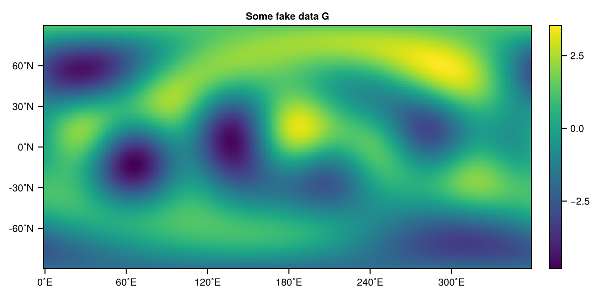
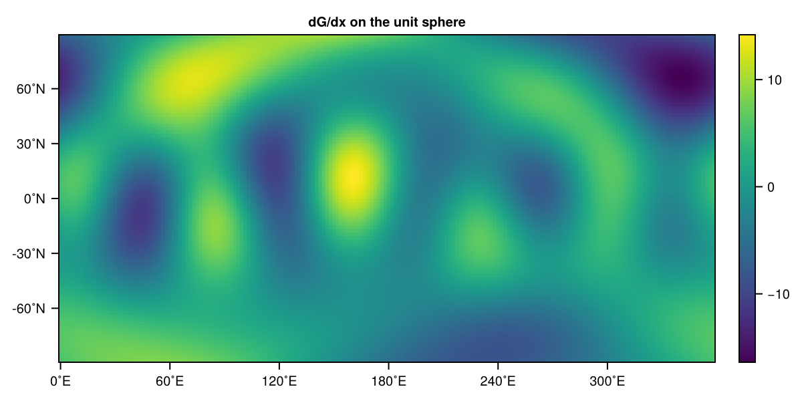
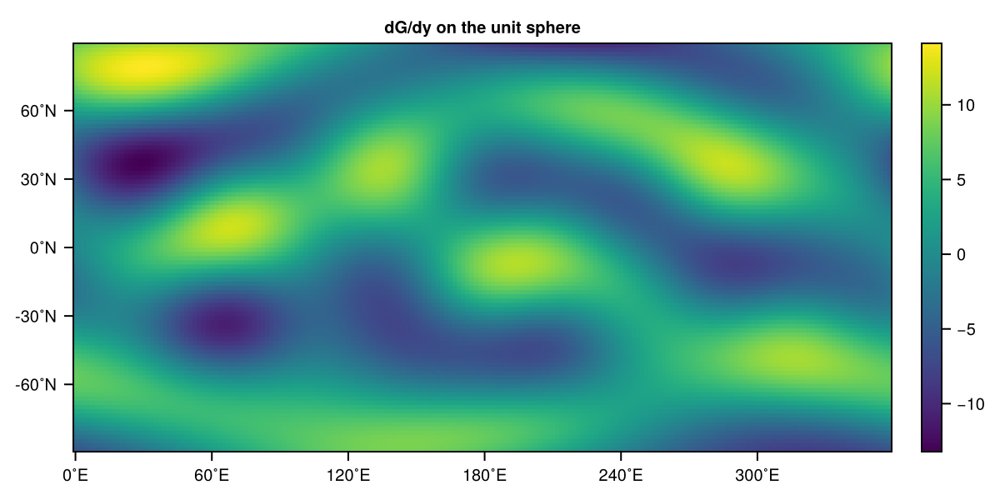
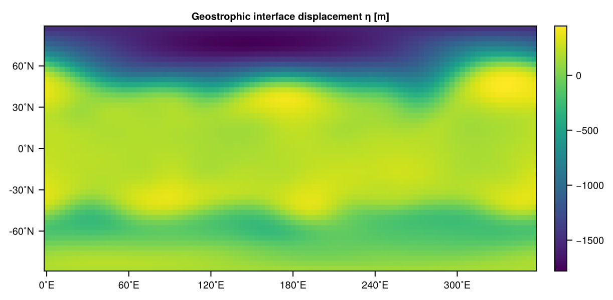
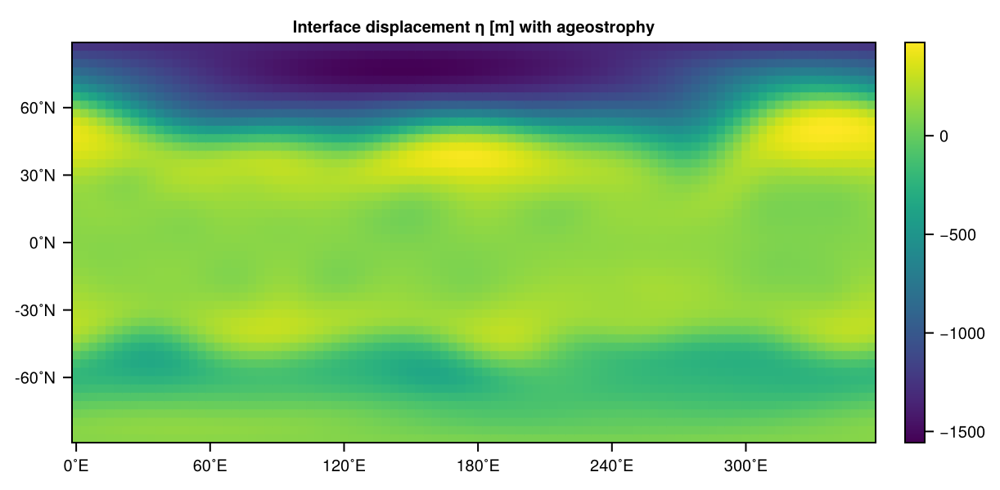

Gradient operators
SpeedyTransforms also includes many gradient operators to take derivatives in spherical harmonics. These are in particular $\nabla, \nabla \cdot, \nabla \times, \nabla^2, \nabla^{-2}$. We call them divergence, curl, ∇, ∇², ∇⁻² (as well as their in-place versions with !) within the limits of unicode characters and Julia syntax. These functions are defined for inputs being spectral coefficients (i.e. LowerTriangularMatrix) or gridded fields (i.e. <:AbstractGrid) and also allow as an additional argument a spectral transform object (see SpectralTransform) which avoids recalculating it under the hood.
The gradient operators in SpeedyTransforms generally assume a sphere of radius $R=1$. For the transforms themselves that does not make a difference, but the gradient operators divergence, curl, ∇, ∇², ∇⁻² omit the radius scaling unless you provide the optional keyword radius (or you can do ./= radius manually). Also note that meridional derivates in spectral space expect a $\cos^{-1}(\theta)$ scaling. Details are always outlined in the respective docstrings, ?∇ for example.
The actually implemented operators are, in contrast to the mathematical Derivatives in spherical coordinates due to reasons of scaling as follows. Let the implemented operators be $\hat{\nabla}$ etc.
\[\hat{\nabla} A = \left(\frac{\partial A}{\partial \lambda}, \cos(\theta)\frac{\partial A}{\partial \theta} \right) = R\cos(\theta)\nabla A\]
So the zonal derivative omits the radius and the $\cos^{-1}(\theta)$ scaling. The meridional derivative adds a $\cos(\theta)$ due to a recursion relation being defined that way, which, however, is actually convenient because the whole operator is therefore scaled by $R\cos(\theta)$. The curl and divergence operators expect the input velocity fields to be scaled by $\cos^{-1}(\theta)$, i.e.
\[\begin{aligned} \hat{\nabla} \cdot (\cos^{-1}(\theta)\mathbf{u}) &= \frac{\partial u}{\partial \lambda} + \cos\theta\frac{\partial v}{\partial \theta} = R\nabla \cdot \mathbf{u}, \\ \hat{\nabla} \times (\cos^{-1}(\theta)\mathbf{u}) &= \frac{\partial v}{\partial \lambda} - \cos\theta\frac{\partial u}{\partial \theta} = R\nabla \times \mathbf{u}. \end{aligned}\]
And the Laplace operators omit a $R^2$ (radius $R$) scaling, i.e.
\[\hat{\nabla}^{-2}A = \frac{1}{R^2}\nabla^{-2}A , \quad \hat{\nabla}^{2}A = R^2\nabla^{2}A\]
Gradient ∇
We illustrate the usage of the gradient function ∇. Let us create some fake data G on the grid first
using SpeedyWeather, CairoMakie
# create some data with wave numbers 0,1,2,3,4
trunc = 64 # 1-based maximum degree of spherical harmonics
L = randn(LowerTriangularMatrix{ComplexF32}, trunc, trunc)
spectral_truncation!(L, 5) # remove higher wave numbers
G = transform(L)
heatmap(G, title="Some fake data G") # requires `using CairoMakie`
Now we can take the gradient as follows
dGdx, dGdy = ∇(G)this transforms internally back to spectral space takes the gradients in zonal and meridional direction, transforms to grid-point space again und unscales the coslat-scaling on the fly but assumes a radius of 1 as the keyword argument radius was not provided. Use ∇(G, radius=6.371e6) for a gradient on Earth in units of "data unit" divided by meters.
heatmap(dGdx, title="dG/dx on the unit sphere")
heatmap(dGdy, title="dG/dy on the unit sphere") 
Geostrophy
Now, we want to use the following example to illustrate a more complex use of the gradient operators: We have $u, v$ and want to calculate $\eta$ in the shallow water system from it following geostrophy. Analytically we have
\[-fv = -g\partial_\lambda \eta, \quad fu = -g\partial_\theta \eta\]
which becomes, if you take the divergence of these two equations
\[\zeta = \frac{g}{f}\nabla^2 \eta\]
Meaning that if we start with $u, v$ we can obtain the relative vorticity $\zeta$ and, using Coriolis parameter $f$ and gravity $g$, invert the Laplace operator to obtain displacement $\eta$. How to do this with SpeedyTransforms?
Let us start by generating some data
spectral_grid = SpectralGrid(trunc=31, nlayers=1)
forcing = SpeedyWeather.JetStreamForcing(spectral_grid)
drag = LinearVorticityDrag(spectral_grid)
model = ShallowWaterModel(spectral_grid; forcing, drag)
simulation = initialize!(model);
run!(simulation, period=Day(30))Now pretend you only have u, v to get vorticity (which is actually the prognostic variable in the model, so calculated anyway...).
u = simulation.diagnostic_variables.grid.u_grid[:, 1] # [:, 1] for 1st layer
v = simulation.diagnostic_variables.grid.v_grid[:, 1]
vor = curl(u, v, radius = spectral_grid.radius)Here, u, v are the grid-point velocity fields, and the function curl takes in either LowerTriangularMatrixs (no transform needed as all gradient operators act in spectral space), or, as shown here, arrays of the same grid and size. In this case, the function actually runs through the following steps
RingGrids.scale_coslat⁻¹!(u)
RingGrids.scale_coslat⁻¹!(v)
S = SpectralTransform(u, one_more_degree=true)
us = transform(u, S)
vs = transform(v, S)
vor = curl(us, vs, radius = spectral_grid.radius)560-element, 33x32 LowerTriangularMatrix{ComplexF32}
0.0+0.0im 0.0+0.0im … 0.0+0.0im
8.92028f-7+0.0im 2.5559f-8+3.03781f-8im 0.0+0.0im
4.31604f-6+0.0im 4.26282f-7+1.10545f-7im 0.0+0.0im
1.95874f-5+0.0im 2.66912f-6+1.20276f-6im 0.0+0.0im
1.46846f-5+0.0im 5.3995f-6+1.48826f-6im 0.0+0.0im
3.28076f-6+0.0im 6.96295f-6+4.69274f-6im … 0.0+0.0im
7.4975f-6+0.0im 5.67134f-6+5.11591f-6im 0.0+0.0im
-2.94711f-5+0.0im -2.32396f-6-1.22785f-6im 0.0+0.0im
-5.64697f-6+0.0im -4.07782f-6-5.697f-6im 0.0+0.0im
3.03691f-6+0.0im -5.46404f-6+1.73788f-6im 0.0+0.0im
⋮ ⋱
-4.04657f-8+0.0im 5.1938f-7+6.95289f-7im 0.0+0.0im
4.1034f-7+0.0im 4.61706f-7+3.66954f-7im … 0.0+0.0im
-7.41192f-7+0.0im 8.45604f-8-3.10928f-7im 0.0+0.0im
-1.98203f-7+0.0im -5.67618f-8-2.32665f-7im 0.0+0.0im
-2.84515f-7+0.0im -7.10368f-8+4.00623f-8im 0.0+0.0im
6.51288f-8+0.0im -2.04849f-7-2.84165f-8im 0.0+0.0im
1.77228f-7+0.0im 6.15788f-8+1.3643f-8im … 0.0+0.0im
-5.18132f-9+0.0im 6.01705f-8-7.13362f-9im -8.89164f-9+5.90103f-9im
0.0+0.0im 0.0+0.0im 0.0+0.0im(Copies of) the velocity fields are unscaled by the cosine of latitude (see above), then transformed into spectral space, and the curl has the keyword argument radius to divide internally by the radius (if not provided it assumes a unit sphere). We always unscale vector fields by the cosine of latitude if they are provided to curl or divergence in spectral as you can only do this scaling effectively in grid-point space. The methods accepting arguments as grids generally do this for you. If in doubt, check the docstrings, ?∇ for example.
One more degree for spectral fields
The SpectralTransform in general takes a one_more_degree keyword argument, if otherwise the returned LowerTriangularMatrix would be of size 32x32, setting this to true would return 33x32. The reason is that while most people would expect square lower triangular matrices for a triangular spectral truncation, all vector quantities always need one more degree (= one more row) because of a recursion relation in the meridional gradient. So as we want to take the curl of us, vs here, they need this additional degree, but in the returned lower triangular matrix this row is set to zero.
All gradient operators expect the input lower triangular matrices of shape $(N+1) \times N$. This one more degree of the spherical harmonics is required for the meridional derivative. Scalar quantities contain this degree too for size compatibility but they should not make use of it. Use spectral_truncation to add or remove this degree manually.
You may also generally assume that a SpectralTransform struct precomputed for some truncation, say $l_{max} = m_{max} = T$ could also be used for smaller lower triangular matrices. While this is mathematically true, this does not work here in practice because LowerTriangularMatrices are implemented as a vector. So always use a SpectralTransform struct that fits matches your resolution exactly (otherwise an error will be thrown).
Example: Geostrophy (continued)
Now we transfer vor into grid-point space, but specify that we want it on the grid that we also used in spectral_grid. The Coriolis parameter for a grid like vor_grid is obtained, and we do the following for $f\zeta/g$.
vor_grid = transform(vor, Grid=spectral_grid.Grid)
f = coriolis(vor_grid) # create Coriolis parameter f on same grid with default rotation
g = model.planet.gravity
fζ_g = @. vor_grid * f / g # in-place and element-wiseNow we need to apply the inverse Laplace operator to $f\zeta/g$ which we do as follows
fζ_g_spectral = transform(fζ_g, one_more_degree=true)
R = spectral_grid.radius
η = SpeedyTransforms.∇⁻²(fζ_g_spectral) * R^2
η_grid = transform(η, Grid=spectral_grid.Grid)Note the manual scaling with the radius $R^2$ here. We now compare the results
using CairoMakie
heatmap(η_grid, title="Geostrophic interface displacement η [m]")
Which is the interface displacement assuming geostrophy. The actual interface displacement contains also ageostrophy
η_grid2 = simulation.diagnostic_variables.grid.pres_grid
heatmap(η_grid2, title="Interface displacement η [m] with ageostrophy")
Strikingly similar! The remaining differences are the ageostrophic motions but also note that the mean can be off. This is because geostrophy only use/defines the gradient of $\eta$ not the absolute values itself. Our geostrophic $\eta_g$ has by construction a mean of zero (that is how we define the inverse Laplace operator) but the actual $\eta$ can be higher or lower depending on the mass/volume in the shallow water system, see Mass conservation.